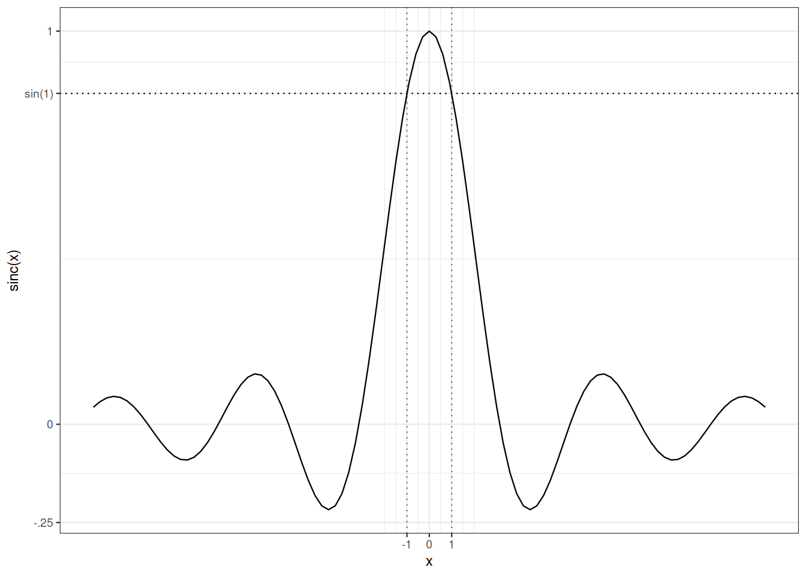

11 Convergence in distribution
11.1 Motivation
Recall Lesson 1. Consider Binomial distributions with parameters \((n, \lambda/n)\) and Poisson distribution with parameter \(\lambda\). Graphical inspection of probability mass functions suggests that as \(n\) grows, Binomial distributions with parameters \((n, \lambda/n)\) look more and more alike Poisson distribution with parameter \(\lambda\). Comparing probability generating functions is more compelling. The probability generating function of the Binomial distribution with parameters \((n, \lambda/n)\) is \(s \mapsto (1 +\lambda(s-1)/n )^n\). As \(n\) tends towards infinity, the probability generating functions of the Binomials converge pointwise towards the probability generating function of the Poisson distribution with mean \(\lambda\): \(s \mapsto \exp(\lambda(s-1))\). In Lesson 1, we saw other examples of distributions which tend to look alike some limiting distributions as some parameter moves.
In Lesson 10, we equipped the set \(L_0(\Omega, \mathcal{F}, P)\) with topologies (\(L_p\), almost sure convergence, convergence in probability). In this lesson, we consider the set of probability distributions over some measurable space \((\Omega, \mathcal{F})\). This set can be equipped with a variety of topologies. We shall focus on the topology defined by convergence in distribution also called weak convergence.
In Section 11.2), we introduce weak and vague convergences for sequences of probability distributions. In Section 11.3) Weak convergence induces the definition of convergence in distribution for random variables that possibly live on different probability spaces (just as our occupancy scores in Lesson 1).
Section 11.4) is dedicated to the Portemanteau Theorem. This theorem lists a number of alternative and equivalent characterizations of convergence in distribution. Alternative characterizations are useful in two respects: they may be easier to check than the characterization used in the definition; they may supply a larger range of applications.
In Section 11.5), we state and prove the Lévy continuity theorem. The Levy continuity theorem relates convergence in distribution with pointwise convergence of characteristic functions: characteristic functions not only allow us to identify probability distributions, they are also convergence determining. It could be one more line in the statement of Theorem 11.1). But the Lévy continuity Theorem stands out because it provides us with a concise proof of the Central Limit Theorem for normalized sums of centered i.i.d. random variables. This is the content of Section 11.8).
11.2 Weak convergence, vague convergence
Weak convergence of probability measures assesses the proximity of probability measures by comparing their action on a collection of test functions.
Definition 11.1 (Weak convergence) A sequence of probability distributions \((P_n)_{n \in\mathbb{N}}\) sur \(\mathbb{R}^k\) converges weakly towards probability distribution \(P\) (on \(\mathbb{R}^k\))
iff
for any bounded and continuous function \(f\) from \(\mathbb{R}^k\) to \(\mathbb{R}\), the sequence \((\mathbb{E}_{P_n} [f])_{n \in \mathbb{N}}\) converges towards \(\mathbb{E}_P [f]\).
Remark 11.1. We shall see that the there is some flexibility in the choice of the class of test functions.
But this choice is not unlimited.
If we restrict the collection of test functions to continuous functions with compact support (which are always bounded), we obtain a different notion of convergence.
Definition 11.2 (Vague convergence) A sequence of probability distributions \((P_n)_{n \in \mathbb{N}}\) sur \(\mathbb{R}^k\) converges vaguely towards measure \(\mu\) (on \(\mathbb{R}^k\)) iff for any continuous function \(f\) with compact support from \(\mathbb{R}^k\) to \(\mathbb{R}\), the sequence \((\mathbb{E}_{P_n} [f])_{n \in \mathbb{N}}\) converges towards \(\mathbb{E}_P [f]\).
Example 11.1 Consider the sequence of probability masses over the integers \((\delta_n)_{n \in \mathbb{N}}\). This sequence converges vaguely towards the null measure. It does not converge weakly.
The next question deserves further thinking.
Exercise 11.1 If a sequence of probability distributions over \(\mathbb{R}^k\) converges vaguely towards a probability measure, does it also converge weakly towards this probability measure?
11.3 Convergence in distribution
Definition 11.3 (Convergence in distribution) A sequence \((X_n)_{n \in \mathbb{N}}\) of \(\mathbb{R}^k\)-valued random variables defined on a sequence of probability spaces \((\Omega_n, \mathcal{F}_n, P_n)\) converges in distribution if the sequence \((P_n \circ X_n^{-1})_{n \in \mathbb{N}}\) converges weakly. This is denoted by \[ X_n \rightsquigarrow X \qquad \text{or} \qquad X_n \rightsquigarrow \mathcal{L} \]
(\(\mathcal{L}\) denotes a probability distribution), the probability spaces are defined implicitly
In order to check or use convergence in distribution, many equivalent characterizations are available. Some of them are listed in the Portemanteau Theorem.
11.4 Portemanteau Theorem
The next list of equivalent characterizations of weak convergence is not exhaustive.
Theorem 11.1 (Portemanteau Theorem) A sequence of probability distributions \((P_n)_{n \in \mathbb{N}}\) on \(\mathbb{R}^k\) converges weakly towards a probability distribution \(P\) (on \(\mathbb{R}^k\)) iff one of the equivalent properties hold:
- For every bounded continuous function \(f\) from \(\mathbb{R}^k\) to \(\mathbb{R}\), the sequence \(\mathbb{E}_{P_n} [f]\) converges towards \(\mathbb{E}_P [f]\).
- For every bounded uniformly continuous function \(f\) from \(\mathbb{R}^k\) to \(\mathbb{R}\), the sequence \(\mathbb{E}_{P_n} [f]\) converges towards \(\mathbb{E}_P [f]\).
- For every bounded Lipschitz function \(f\) from \(\mathbb{R}^k\) to \(\mathbb{R}\), the sequence \(\mathbb{E}_{P_n} [f]\) converges towards \(\mathbb{E}_P [f]\).
- For every \(P\)-almost surely bounded and continuous function \(f\) from \(\mathbb{R}^k\) to \(\mathbb{R}\), the sequence \((\mathbb{E}_{P_n} [f])\) converges towards \(\mathbb{E}_P [f]\).
- For every closed subset \(F\) of \(\mathbb{R}^k\), \(\limsup P_n (F) \leq P(F).\)
- For every open subset \(O\) of \(\mathbb{R}^k\), \(\liminf P_n (O) \geq P(O).\)
- For every Borelian \(A\) such that \(P(A^\circ) = P(\overline{A})\) (the boundary of \(A\) is \(P\)-negligible), \(\lim_n P_n(A)=P(A)\).
In English, as in French, a portemanteau is a suitcase.
Proof. Implications \(1) \Rightarrow 2) \Rightarrow 3)\) are obvious. Lévy’s continuity theorem, the major result from Section 11.5) entails that \(3) \Rightarrow 1)\).
\(4)\).
That \(5) \Leftrightarrow 6)\) follows from the fact that the complement of a closed set is an open set.
\(5)\) and \(6)\) imply \(7)\): \[ \limsup_n P_n(\overline{A}) \leq P(\overline{A}) = P(A^\circ) \leq \liminf_n P_n(A^\circ) \, . \] By monotony: \[ \liminf_n P_n(A^\circ) \leq \liminf_n P_n (A) \leq \limsup_n P_n(A) \leq \limsup_n P_n (\overline(A)) \, . \] Combining leads to \[ \lim_n P_n(A) = \liminf_n P_n (A) = \limsup_n P_n(A) = P(A^\circ) = P(\overline{A}) \, . \]
Let us check that \(3) \Rightarrow 5)\). Let \(F\) be a closed subset of \(\mathbb{R}^k\). For \(x\in \mathbb{R}^k\), let \(\mathrm{d}(x,F)\) denote the distance from \(x\) to \(F\). For \(m \in \mathbb{N}\), let \(f_m(x) = \big(1 - m \mathrm{d}(x, F)\big)_+\). The function \(f_m\) is \(m\)-Lipschitz, lower bounded by \(\mathbb{I}_F\), and for every \(x \in \mathbb{R}^k\) \(\lim_m \downarrow f_m(x)= \mathbb{I}_F(x)\).
Weak convergence of \(P_n\) to \(P\) implies \[ \lim_n \mathbb{E}_{P_n} f_m = \mathbb{E}_P f_m \] hence for every \(m \in \mathbb{N}\) \[ \limsup_n \mathbb{E}_{P_n} \mathbb{I}_F \leq \mathbb{E}_P f_m \, . \] Taking the limit on the right side leads to \[ \limsup_n P_n(F) = \limsup_n \mathbb{E}_{P_n} \mathbb{I}_F \leq \lim_m \downarrow \mathbb{E}_P f_m = \mathbb{E}_P \mathbb{I_F} = P(F) \, . \]
Assume now that \(7)\) holds. Let us show that this entails \(1)\)
Let \(f\) be a bounded continuous function. Assume w.l.o.g. that \(f\) is non-negative and upper-bounded by \(1\). Recall that for each \(\sigma\)-finite measure \(\mu\) \[ \int f \mathrm{d}\mu = \int_{[0,\infty)} \mu\{f > t\} \mathrm{d}t \, . \] This holds for all \(P_n\) and \(P\). Hence \[ \mathbb{E}_{P_n} f = \int_{[0,\infty)} P_n \{ f > t \} \mathrm{d}t \] As \(\overline{\{ f > t\}}= \{ f \geq t\}\), \(\overline{\{ f > t\}} \setminus \{ f > t\}^\circ = \{ f = t\}\). The set of values \(t\) such that \(P \{ f = t\}>0\) is at most countable and thus Lebesgue-negligible. Let \(E\) be its complement. For \(t\in E\), \(\lim_n P_n\{ f> t\} = P\{f >t\}\). \[\begin{align*} \lim_n \mathbb{E}_{P_n} f & = \lim_n \int_{[0, 1]} P_n \{ f >t \} \mathrm{d}t \\ & = \lim_n \int_{[0, 1]} P_n \{ f >t \} \mathbb{I}_E(t) \mathrm{d}t \\ & = \int_{[0, 1]} \lim_n P_n \{ f >t \} \mathbb{I}_E(t) \mathrm{d}t \\ & = \int_{[0,1]} P\{f >t\} \mathbb{I}_E(t) \mathrm{d}t \\ & = \int_{[0,1]} P\{f >t\} \mathrm{d}t \\ & = \mathbb{E}_P f \, . \end{align*}\]
For probability measures over \((\mathbb{R}, \mathcal{B}(\mathbb{R}))\), weak convergence is determined by cumulative distribution functions. This is sometimes taken as a definition of weak convergence in elementary books.
Corollary 11.1 A sequence of probability measures defined by their cumulative distribution functions \((F_n)_n\) converges weakly towards a probability measure defined by cumulative distribution function \(F\) iff \(\lim_n F_n(x) = F(x)\) at every \(x\) which is a continuity point of \(F\).
For probability measures over \((\mathbb{R}, \mathcal{B}(\mathbb{R}))\), weak convergence is also determined by quantile functions.
Proposition 11.1 A sequence of probability measures defined by their quantile functions \((F^\leftarrow_n)_n\) converges weakly towards a probability measure defined by quantile function \(F^\leftarrow\) iff \(\lim_n F_n^\leftarrow(x) = F^\leftarrow(x)\) at every \(x\) which is a continuity point of \(F^\leftarrow\).
Prove Proposition Proposition 11.1.
Proposition 11.2 (Almost sure representation) If \((X_n)_n\) converges in distribution towards \(X\), then there exists a probability space \((\Omega, \mathcal{F}, P)\) with random variables \((Y_n)_n\) and \(Y\) such that \(X_n \sim Y_n\) for all \(n\), \(X\sim Y\), and \[ Y_n \to Y \qquad P\text{-a.s.} \]
Remark 11.2. The random variables \((X_n)_n\) and \(X\) may live on different probability spaces.
When random variables \(X_n\) are real-valued, Proposition 11.2 follows easily from Proposition Proposition 11.1.
Proof. Let \(\Omega= [0,1], \mathcal{F}=\mathcal{B}(\mathbb{R})\) and \(\omega\) be uniformly distributed over \(\Omega = [0,1]\). Let \(Y_n = F_n^\leftarrow(\omega)\) and \(Y = F^\leftarrow(\omega)\).
Then for each \(n\), \[ P \Big\{ Y_n \leq t \Big\} = P\Big\{\omega : F_n^\leftarrow(\omega) \leq t \Big\} = P\Big\{\omega : \omega \leq F_n(t) \Big\} = F_n(t) \] so that \(Y_n \sim F_n\). And by the same argument, \(Y \sim F\).
As a non-decreasing function has at most countably many discontinuities, \[ P\Big\{\omega : F^\leftarrow\text{ is continuous at }\omega \Big\}=1\,. \] Now, assume \(\omega\) is a continuity point of \(F^{\leftarrow}\). Then by Proposition Proposition 11.1, \(\lim_n F_n^{\leftarrow}(\omega) = F^\leftarrow(\omega)\). This translates to \[ P \Big\{\omega : \lim_n Y_n(\omega) =Y(\omega) \Big\} = 1 \, . \]
\(\square\)
11.5 Lévy continuity theorem
Theorem 11.2 (Lévy’s continuity theorem) A sequence \((P_n)_n\) of probability distributions over \(\mathbb{R}^d\) converges weakly towards a probability distribution \(P\) over \(\mathbb{R}^d\) iff the sequence of characteristic functions converges pointwise towards the characteristic function of \(P\).
Remark 11.3. Theorem 11.2 asserts that weak convergence of probability measures is characterized by a very small subset of bounded continuous functions. To warrant weak convergence of \((P_n)_n\) towards \(P\) it is enough to check that \(\mathbb{E}_{P_n}f \to \mathbb{E}_Pf\) for functions \(f\) in family \(\{ \cos(t \cdot), \sin(t \cdot) : t \in \mathbb{R} \}\). These functions are bounded and infinitely many times differentiable.
Let \((X_n)_n, X\) and \(Z\) live on the same probability space. If \((X_n)_n\), \(X\) and \(Z\) are random variables such that for every \(\sigma>0\), \(X_n + \sigma Z \rightsquigarrow X+\sigma Z\), then \(X_n \rightsquigarrow X\).
Proof. Let \(h\) be bounded by \(1\) and \(1\)-Lipschitz \[\begin{align*} \Big| \mathbb{E} h(X_n) -h(X) \Big| & \leq \Big| \mathbb{E} h(X_n) - h(X_n + \sigma Z) \Big| \\ & \qquad + \Big| \mathbb{E} h(X_n + \sigma Z) - h(X + \sigma Z) \Big| \\ & \qquad + \Big| \mathbb{E} h(X + \sigma Z) - h(X) \Big| \end{align*}\] The first and third summand can be handled in the same way.
Let \(\epsilon >0\), \[\begin{align*} \Big| \mathbb{E} h(X_n) - h(X_n + \sigma Z) \Big| & \leq \Big| \mathbb{E} (h(X_n) - h(X_n + \sigma Z)) \mathbb{I}_{\sigma |Z|>\epsilon} \Big| \\ & \qquad + \Big| \mathbb{E} (h(X_n) - h(X_n + \sigma Z)) \mathbb{I}_{\sigma |Z|\leq\epsilon} \Big| \\ & \leq 2 P\{\sigma |Z|>\epsilon\} + \epsilon \, . \end{align*}\] Combining the different bounds leads to \[\begin{align*} \Big| \mathbb{E} h(X_n) -h(X) \Big| & \leq 2 P\{\sigma |Z|>\epsilon\} + \epsilon + \Big| \mathbb{E} h(X_n + \sigma Z) - h(X + \sigma Z) \Big| \end{align*}\] The last summand on the right-hand-side tends to \(0\) as \(n\) tends to infinity. The first summand tends to \(0\) as \(\sigma\) tends to \(0\).
Hence
\[ \limsup_n \Big| \mathbb{E} h(X_n) - h(X_n + \sigma Z) \Big| \leq \epsilon \, . \]
\(\square\)
Lemma 11.1 (Scheffé’s Lemma) Let \((P_n)_n\) be a sequence of absolutely continuous probability distributions with densities \((f_n)_n\). Assume that densities \((f_n)_n\) converge pointwise towards the density \(f\) of some probability distribution \(P\), then \(P_n \rightsquigarrow P\).
Proof. \[\begin{align*} \int_{\mathbb{R}} |f_n(x) - f(x)| \mathrm{d}x & = \int_{\mathbb{R}} (f(x) - f_n(x))_+ \mathrm{d}x + \int_{\mathbb{R}} (f(x) - f_n(x))_- \mathrm{d}x \\ & = 2 \int_{\mathbb{R}} (f(x) - f_n(x))_+ \mathrm{d}x \, . \end{align*}\] Observe \((f - f_n)_+ \leq f\) which belongs to \(\mathcal{L}_1(\mathbb{R}, \mathcal{B}(\mathbb{R}), \text{Lebesgue})\). And \((f-f_n)_+\) converges pointwise to \(0\). Hence, by the dominated convergence theorem, \(\lim_n \int_{\mathbb{R}} |f_n - f| \mathrm{d}x =0\).
For any \(A \in \mathcal{B}(\mathbb{R})\), \[ P_n(A) - P(A) = \int_{\mathbb{R}} \mathbb{I}_A (f_n -f) \leq \int_{\mathbb{R}} |f_n -f| \, . \] We have proved more than weak convergence, namely \[ \lim_n \sup_{A \in \mathcal{B}(\mathbb{R})} |P_n(A) - P(A)| = 0 \, . \]
\(\square\)
Proof (Proof of continuity theorem). Assume the characteristic functions of \((X_n)_n\) converges pointwise towards the characteristic function of \(X\).
Let \(Z\) be a standard Gaussian random variable, independent of all \((X_n)_n\) and of \(X\). For \(\sigma>0\), the distributions of \(X_n + \sigma Z\) and \(X + \sigma Z\) have densities that are uniquely determined by the characteristic functions of \(X_n\) and \(X\). Moreover, a dominated convergence argument shows that the densities of \(X_n + \sigma Z\) converge pointwise towards the density of \(X + \sigma Z\). By Scheffé’s Lemma, this entails that \(X_n + \sigma Z \rightsquigarrow X + \sigma Z\).
As this holds for all \(\sigma>0\), this entails that \(X_n \rightsquigarrow X.\)
\(\square\)
11.6 Refining the continuity theorem
In some situations, we can prove that a sequence of characteristic functions converges pointwise towards some function, but we have no candidate for the limiting distribution. The question arises whether the pointwise limit of characteristic functions is the characteristic function of some probability distribution or something else.
The answer may be negative: if \(P_n = \mathcal{N}(0, n)\), the sequence of characteristic functions is \(\big(t \mapsto \exp(-nt^2/2)\big)_n\) which converges pointwise to \(0\) except at \(0\) where it is equal to \(1\) all along. The limit is not the characteristic function of any probability measure: it is not continuous at \(0\).
The next Theorem settles the question.
Theorem 11.3 (Lévy’s continuity theorem, second form) A sequence \((P_n)_n\) of probability distributions over \(\mathbb{R}\) converges weakly towards a probability distribution over \(\mathbb{R}\) iff the sequence of characteristic functions converges pointwise towards a function that is continuous at \(0\). The limit function is the characteristic function of some probability distribution.
Definition 11.4 (Uniform tightness) A sequence of Probability measures \((P_n)_n\) over \(\mathbb{R}\) is uniformly tight if for every \(\epsilon >0\), there exists some compact \(K \subseteq \mathbb{R}\) such that
\[\forall n, \qquad P_n(K) \geq 1 - \epsilon\, .\]
Exercise 11.2 To establish uniform tightness of \((P_n)_n\), it is enough to show that for every \(\epsilon>0\), there exists some \(n_0(\epsilon)\), and some compact \(K \subseteq \mathbb{R}\) such that
\[\forall n \geq n_(\epsilon), \qquad P_n(K) \geq 1 - \epsilon\, .\]
We admit the (important) next Theorem.
Theorem 11.4 (Prokhorov-Le Cam) If \((P_n)_n\) is a uniformly tight sequence of probability measures on \(\mathbb{R}\), then there exists some probability measure \(P\) and some subsequence \((P_{n(k)})_{k \in \mathbb{N}}\) such that
\[P_{n(k)} \rightsquigarrow P \, .\]
Then
Lemma 11.2 (Uniform tightness Lemma) Let \((P_n)_n\) be a sequence of probability distributions over \(\mathbb{R}\), with characteristic functions \(\widehat{F}_n\). If the sequence \((\widehat{F}_n)_n\) converge pointwise towards a function that is continuous at \(0\) then the sequence \((P_n)_n\) is uniformly tight.
We shall use the following technical upper bound which is illustrated in Figure 11.1:
\[ \forall t \in \mathbb{R} \setminus[-1,1], \qquad \frac{\sin(t)}{t} \leq \sin(1) \leq \frac{6}{7}\, . \]
Proposition 11.3 (Truncation Lemma) Let \(\widehat{F}\) be the characteristic function of some probability measure \(P\) on the real line, then for all \(u > 0\): \[ \frac{1}{u}\int_0^u \big(1 - \operatorname{Re}\widehat{F}(v)\big) \mathrm{d}v \geq \frac{1}{7} P \Big[\frac{-1}{u}, \frac{1}{u}\Big]^c \, . \]
Proof (Proof of Truncation Lemma). \[\begin{align*} \frac{1}{u}\int_0^u \big(1 - \operatorname{Re}\widehat{F}_n(v)\big) \mathrm{d}v & = \frac{1}{u}\int_0^u \Big(\int_{\mathbb{R}} \big(1 - \cos(v w)\big)\mathrm{d}F(w) \Big)\mathrm{d}v \\ & = \int_{\mathbb{R}}\int_0^u \frac{1}{u} \Big( \big(1 - \cos(v w)\big) \mathrm{d}v \Big)\mathrm{d}F(w) \\ & = \int_{\mathbb{R}} \Big( 1 - \frac{\sin(uw)}{uw} \Big)\mathrm{d}F(w) \\ & \geq \int_{|uw| \geq 1} \Big( 1 - \frac{\sin(uw)}{uw} \Big)\mathrm{d}F_n(w) \\ & \geq (1- \sin(1)) P \Big[\frac{-1}{u}, \frac{1}{u}\Big]^c \, \end{align*}\] where the two inequalities follow from the bounds on the \(\operatorname{sinc}\) function.
\(\square\)
Proof (Proof of Uniform tightness Lemma). Assume that the sequence \((\widehat{F}_n)_n\) converge pointwise towards a function \(\widehat{F}\) that is continuous at \(0\).
Note that \(\widehat{F}_n(0)=1\) for all \(n\), hence, trivially, \(1 =\lim_n \widehat{F}_n(0) = \widehat{F}(0)\).
As \(|\operatorname{Re}\widehat{F}_n(t)|\leq 1\), \(|\operatorname{Re}\widehat{F}(t)|\leq 1\) also holds.
Fix \(\epsilon>0\), as \(\widehat{F}\) is continuous at \(0\), for some \(u>0\), for all \(v \in [-u,u]\), \(0 \geq 1- \widehat{F}(u) \leq \epsilon/2.\) Hence, \[ 0 \leq \frac{1}{u}\int_0^u \big(1 - \operatorname{Re}\widehat{F}(v)\big) \mathrm{d}v \leq \epsilon/2 \, . \]
By dominated convergence, \[ \lim_n \frac{1}{u}\int_0^u \big(1 - \operatorname{Re}\widehat{F}_n(v)\big) \mathrm{d}v = \frac{1}{u}\int_0^u \big(1 - \operatorname{Re}\widehat{F}(v)\big) \mathrm{d}v \leq \epsilon/2 \, . \]
For sufficiently large \(n\), \(0 \leq \frac{1}{u}\int_0^u \big(1 - \operatorname{Re}\widehat{F}_n(v)\big) \mathrm{d}v \leq \epsilon\).
Applying the truncation Lemma, for sufficiently large \(n\), we have \[ P_n \Big[\frac{-1}{u}, \frac{1}{u}\Big]^c \leq 7 \epsilon \, . \] The interval \(\Big[\frac{-1}{u}, \frac{1}{u}\Big]\) is compact.
\(\square\)
Proof (Proof of the second form of the continuity theorem). We combine the Uniform Tightness Lemma and the Prokhorov-Le Cam Theorem. Under the assumptions of the second form of the continuity Theorem, there is a probability measure \(P\) (with characteristic function \(\widehat{F}\)), and a subsequence \((P_{n(k)})_{k \in \mathbb{N}}\) such that \(P_{n(k)} \rightsquigarrow P \text{ as } {k \to \infty}\). This entails \(\widehat{F}_{n(k)} \rightarrow \widehat{F} \text{ as } {k \to \infty}\) pointwise. This also entails that \(\widehat{F}_n \rightarrow \widehat{F}\) pointwise for the whole sequence. Finally, we are able to invoke Theorem 11.2) to conclude \(P_{n}\rightsquigarrow P \text{ as }{n \to \infty}\).
\(\square\)
Remark 11.4. All definitions and results in this section can be extended to the \(k\)-dimensional setting for all \(k \in \mathbb{N}\).
11.7 Relations between convergences
The alternative characterizations of weak convergence provided by the Portemanteau Theorem (Theorem 11.1)) facilitate the proof of the next Proposition.
Convergence in probability implies convergence in distribution.
Proof. Assume \((X_n)_n\) converges in probability towards \(X\).
Let \(h\) be a bounded and Lipschitz function. Without loss of generality, assume that \(|f(x)|\leq 1\) for all \(x\) and \(|f(x)-f(y)|\leq \mathrm{d}(x,y)\).
Let \(\epsilon>0\). \[\begin{align*} \Big| \mathbb{E}h(X_n) - \mathbb{E}h(X) \Big| & = \Big| \mathbb{E}\Big[(h(X_n) - h(X) \mathbb{I}_{\mathrm{d}(X,X_n)> \epsilon}\Big] \\ & \qquad + \mathbb{E}\Big[(h(X_n) - h(X) \mathbb{I}_{\mathrm{d}(X,X_n)\leq \epsilon}\Big] \Big| \\ & \leq \mathbb{E}\Big[2 \mathbb{I}_{\mathrm{d}(X,X_n)> \epsilon} \Big] \\ & \qquad + \mathbb{E}\Big[ |h(X_n) - h(X)| \mathbb{I}_{\mathrm{d}(X,X_n)\leq \epsilon}\Big] \\ & \leq 2 P\big\{ \mathrm{d}(X,X_n)> \epsilon \big\} + \epsilon \, . \end{align*}\] Convergence in probability entails that \[ \limsup_n \Big| \mathbb{E}h(X_n) - \mathbb{E}h(X) \Big| \leq \epsilon. \] As this holds for every \(\epsilon >0\), for every bounded Lipschitz function \(h\), \(\lim_n \Big| \mathbb{E}h(X_n) - \mathbb{E}h(X) \Big|=0\). This is sufficient to establish convergence in distribution of \((X_n)_n\).
\(\square\)
11.8 Central limit theorem
The Lévy Continuity Theorem (Theorem 11.2)) is the conerstone of a very concise proof the simplest version of the Central Limit Theorem (CLT). Under square-integrability assumption, the CLT refines the Laws of Large Numbers. It states that as \(n\) tends to infinity, the fluctuations of the empirical mean \(\sum_{i=1}^n X_i/n\) around its expectation tends to be of order \(1/\sqrt{n}\) and, once rescaled, to be normally distributed.
Theorem 11.5 Let \(X_1, \ldots, X_n, \ldots\) be i.i.d. with finite variance \(\sigma^2\) and expectation \(\mu\). Let \(S_n = \sum_{i=1}^n X_i\).
\[\sqrt{n} \left(\frac{S_n}{n} - \mu \right) \rightsquigarrow \mathcal{N}\big(0, \sigma^2 \big) \, .\]
Proof. Let \(\widehat{F}\) denote the characteristic function of the (common) distribution of the random variables \(((X_i-\mu)/\sigma)_i\). Recall fron Lesson 8, that the centering and square integrability assumptions imply that
\[ \widehat{F}(t) = \widehat{F}(0) + \widehat{F}'(0) t + \frac{\widehat{F}'(0)}{2} t^2 + t^2 R(t)= 1 - \frac{t^2}{2} + t^2 R(t) \] where \(\lim_{t \to 0} R(t)=0\). Let \(\widehat{F}_n\) denote the characteristic function of \(\sqrt{n} \left(\frac{S_n}{n} - \mu \right)/\sigma\). Fix \(t \in \mathbb{R}\), \[ \widehat{F}_n(t) = \Big(\widehat{F}(t/\sqrt{n})\Big)^n = \Big(1 - \frac{t^2}{2n} + \frac{t^2}{n} R(t/\sqrt{n})\Big)^n \, . \] As \(n\to \infty\), \[ \lim_n \Big(1 - \frac{t^2}{2n} + \frac{t^2}{n} R(t/\sqrt{n})\Big)^n = \mathrm{e}^{- \frac{t^2}{2}} \, . \]
On the right-hand-side, we recognize the characteristic function of \(\mathcal{N}(0,1)\).
\(\square\)
Remark 11.5. The conditions in the Theorem statement allows for a short proof. They are by no mean necessary. The summands need not be identically distributed. The summands need not be independent. A version of the Lindeberg-Feller Theorem states that under mild assumptions, centered and normalized sums of independent square-integrable random variables converge in distribution towards a Gaussian distribution.
11.9 Cramer-Wold device
So far, we have discussed characteristic functions for real valued random variables. But characteristic functions can be defined for vector-valued random variables. If \(X\) is a \(\mathbb{R}^k\)-valued random variable, its characteristic function maps \(\mathbb{R}^k\) to \(\mathbb{C}\): \[\begin{align*} \mathbb{R}^k & \to \mathbb{C} \\ t & \mapsto \mathbb{E}\mathrm{e}^{i \langle t, X\rangle} \, . \end{align*}\]
The importance of multivariate characteristic functions is reflected in the next device which proof is left to the reader. It consists in the adapting the proof of Theorem 8.6).
Theorem 11.6 (Cramer-Wold) The distribution of a \(\mathbb{R}^k\)-valued random vector \(X = (X_1, \ldots, X_k)^T\) is completely determined by the collection of distributions of univariate random variables \(\langle t, X\rangle =\sum_{i=1}^n t_i X_i\) where \((t_1, \ldots, t_n)^T\) belongs to \(\mathbb{R}^n.\)
Theorem 12.1) provides a short path to the Multivariate Central Limit Theorem.
Theorem 11.7 Let \(X_1, \ldots, X_n, \ldots\) be i.i.d. vector valued random variables with finite covariance \(\Gamma\) and expectation \(\mu\). Let \(S_n = \sum_{i=1}^n X_i\). \[ \sqrt{n} \left(\frac{S_n}{n} - \mu \right) \rightsquigarrow \mathcal{N}\big(0, \Gamma\big) \, . s \]
11.10 Weak convergence and transforms
In Lesson Chapter 8, we introduced different characterizations of probability distributions: probability generating functions, Laplace transforms, Fourier transforms (characteristic functions), cumulative distribution functions, quantiles functions. Within their scope, all those transforms are convergence determining: if a sequence of probability distributions converges weakly, so does (pointwise) the corresponding sequence of transforms, at least at the continuity points of the limiting transform.
In the next two theorems, each random variable is assumed to live on some (implicit) probability space.
A sequence of non-negative random variables \((X_n)_n\) converges in distribution towards the non negative random variable \(X\) iff the sequence of Laplace transforms converges pointwise towards the Laplace transform of the probability distribution of \(X\).
The proof parallels the derivation of Theorem 11.2).
As probability generating functions allows us to recover Laplace transforms, the next theorem is a special case of the statement concerning Laplace transforms.
A sequence of integer-valued random variables \((X_n)_n\) converges in distribution towards the integer-valued random variable \(X\) iff the sequence of Laplace transforms converges pointwise towards the Laplace transform of the probability distribution of \(X\).
11.11 Bibliographic remarks
Dudley (2002) discusses convergence in distributions in two chapters: the first one is dedicated to distributions on \(\mathbb{R}^d\) and the central limit theorem; the second chapter addresses more general universes. In the first chapter, the central limit theorem is extended to triangular arrays that is to sequences of not necessarily identically distributed random variables (Lindeberg’s Theorem).
Dudley (2002) investigates convergence in distributions as convergence of laws on separable metric spaces, that is in a much broader context than we do in these notes. The reader will find there a complete proof of the Prokhorov-Le Cam Theorem and an in-depth discussion of its corollaries. In (Dudley, 2002), a great deal of effort is dedicated to the metrization of the weak convergence topology. The reader will also find in this book a full picture of almost sure representation arguments.
The proof of the Lévy Continuity Theorem given here is taken from (Pollard, 2002).
Using metrizations for weak convergence allows us to investigate rate of convergence in limit theorems. This goes back at least to the Berry-Esseen’s Theorem (1942). Quantitative approaches to weak convergence have acquired a new momentum with the popularization of Stein’s method. This methods is geared towards, but exclusively focused on, general yet quantitative versions of the Central Limit Theorem (Chen, Goldstein, & Shao, 2011) . A thorough yet readable introduction to Stein’s method is (Ross, 2011).
Chen, L. H. Y., Goldstein, L., & Shao, Q.-M. (2011). Normal approximation by Stein’s method (p. xii+405). Springer, Heidelberg. https://doi.org/10.1007/978-3-642-15007-4
Dudley, R. M. (2002). Real analysis and probability (Vol. 74, p. x+555). Cambridge: Cambridge University Press.
Pollard, D. (2002). A user’s guide to measure theoretic probability (Vol. 8, p. xiv+351). Cambridge University Press, Cambridge.
Ross, N. (2011). Fundamentals of Stein’s method. Probab. Surv., 8, 210–293. https://doi.org/10.1214/11-PS182